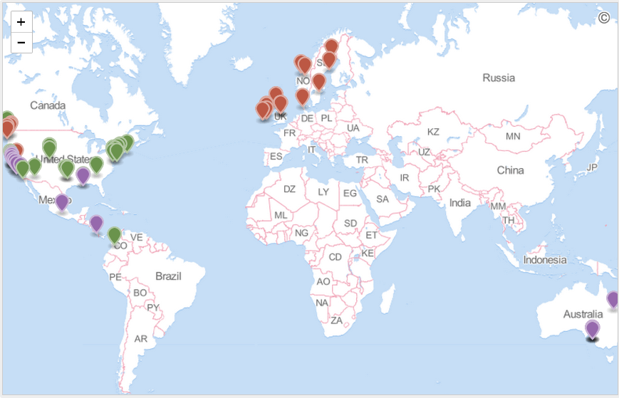
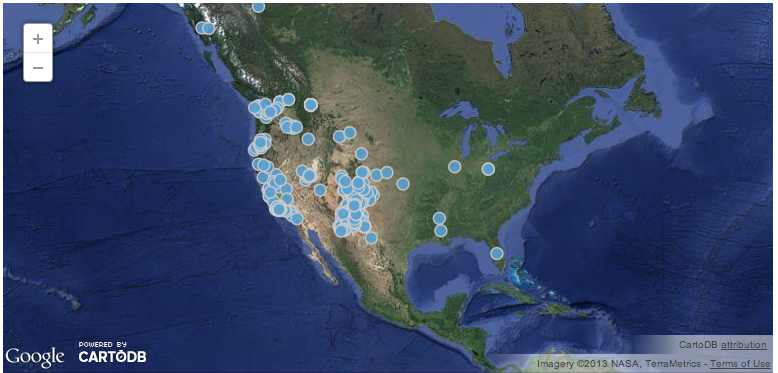

Cultivating open and reproducible science
Scott Chamberlain (@recology_)
recology.info/talks/uga
License: CC-BY 3.0 - You are free to copy, share, adapt, or remix, photograph, film, or broadcast, blog, live-blog, or post video of this presentation, provided that you attribute the work to its author and respect the rights and licenses associated with its components.


These data are hard to get
We need...
Instructions for preparation of the Biographical Sketch have been revised to rename the "Publications" section to "Products" and amend terminology and instructions accordingly. This change makes clear that products may include, but are not limited to, publications, data sets, software, patents, and copyrights.Issuance of a new NSF Proposal & Award Policies and Procedures Guide (October 4th)
the Data Policy states the ‘minimal dataset’ consists “of the dataset used to reach the conclusions drawn in the manuscript with related metadata and methods, and any additional data required to replicate the reported study findings in their entirety. This does not mean that authors must submit all data collected as part of the research, but that they must provide the data that are relevant to the specific analysis presented in the paper.Issuance of a new NSF Proposal & Award Policies and Procedures Guide (October 4th)
To increase the pace of science
Most research publicly funded
Sharing data increases citations

for yourself!
for others (if reproducible, more confidence in results)
Sort of a moral obligation as a scientist, right?
And to avoid this ->
| Reinhart-Rogoff |
Chronic fatigue syndrome-XMRV |


Or maybe you just want science to be easier
What tools do we need? What's missing?
A reproducible workflow
Not these!

These!

There's a learning curve, but...

Workflows side by side
| Our workflow now
|
What it could be |
|||
Cost = $$$$$$$ Open? = Nope Reproducible? = Nope |
Cost = 0 Open? = Yes! Reproducible? = Yep |
A perfect marriage
Data is increasingly on the web

Reproducibly plug data from the web into your science
API: Application Programming Interface - APIs are the highways connecting providers to users.
Connecting scientists to open data on the web

How rOpenSci got started

formed from ad-hoc conversation over Twitter. Now a worldwide community of researchers.
Data acquisition
data manipulation/analysis/viz
writing
publish
Data acquisition
data manipulation/analysis/viz
writing
publish
Data acquisition
data manipulation/analysis/viz
writing
publish
Data acquisition
data manipulation/analysis/viz
writing
publish
Data acquisition
data manipulation/analysis/viz
writing
publish
rOpenSci packages
at ropensci.org/packages
| Data |
Literature
|
Altmetrics
|
Publishing
|
Data
Unified species occurrence data - spocc

Various plotting options
 |
 | |||||
|  |  |
Visualize data interactively with GitHub
Visualize data interactively with CartoDB
this is powerful
Literature
literature...
Altmetrics
altmetrics...
Publishing
R data publishing
EML (Jones et al., 2001) is a comprehensive standard that has been adopted by a sector of the larger international ecological research community.
EML provides a common structure for these resources, to better enable ecologists to document, share, and interpret ecological data
EML standard enables data integration at the machine level (with little or no human intervention).
Data acquisition
data manipulation/analysis/viz
writing
publish
Community building
The rOpenSci Community

Community size
71 contributors
148 Github repositories
Domains
Ecology
History
Archeology
More...
Training
Hackathons